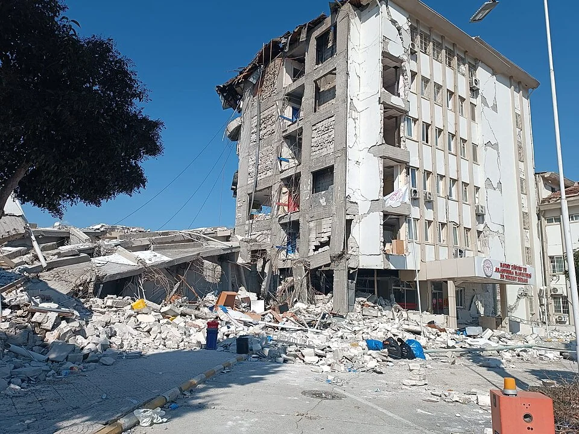

Türkiye’nin afet geçmişi tek bir felaketin hikâyesi değil. Kuzey ve Doğu Anadolu fayları boyunca yaşanan depremler, Karadeniz’in dik yamaçlarında ani sellere dönüşebilen yağışlar ve sıcak, kurak dönemlerde büyüyebilen orman yangınları, farklı bölgelerde farklı riskler doğuruyor. Geçmişe bakmak, olayları sıralamanın yanı sıra neden bazı yerlerin daha ağır etkilendiğini de sormak demek.
“Doğal afet” sözü yaygın olsa da, doğa olayı ile afet aynı şey değildir. Deprem, taşkın veya yangın bir tehlike yaratır; can ve yaşam alanları üzerindeki sonuçları ise maruziyet, yapıların dayanıklılığı, arazi kullanımı, uyarı ve müdahale kapasitesi gibi etkenlerle şekillenir. Bu yüzden bir felaketi yalnızca “doğanın öfkesi” diye açıklamak, önlenebilir zararları ve toplumsal koşulları görünmez kılabilir.
İstanbul’un tarihsel deprem hafızası
Marmara çevresindeki büyük depremler, İstanbul’un tarihini yüzyıllardır etkiliyor. 1509’da meydana gelen ve tarih yazınında “Küçük Kıyamet” adıyla da anılan deprem, kentte ve çevresinde ciddi yıkıma yol açtı. O döneme ait anlatılar olayın büyüklüğünü ve hasarı aktarsa da, bugünkü ölçüm araçları bulunmadığından can kaybı ve şiddet hakkındaki sayılar kaynaklara göre değişiyor. Tarihsel deprem araştırmaları, bu kayıtları jeolojik bulgularla birlikte değerlendiriyor.
Bu kayıtların önemi yalnızca eski İstanbul’un nasıl zarar gördüğünü göstermeleri değil. Marmara’nın deprem tehlikesinin yeni olmadığını, ancak tehlikenin afete dönüşme biçiminin kentin nüfusu, yapılaşması ve hazırlığıyla değiştiğini de hatırlatıyorlar. Tarihsel anlatılardaki her sayıyı kesin veri gibi okumamak; belirsizlikleri açıkça belirtmek gerekiyor.
1939 Erzincan depremi: yıkım ve yeni yapı kuralları
27 Aralık 1939’da Erzincan yakınlarında meydana gelen deprem, USGS kataloğunda moment büyüklüğü 7,8 olarak kayıtlı. Dönemin ulaşım ve haberleşme koşulları, kış şartları ve yapıların kırılganlığı, afetin sonuçlarını ağırlaştırdı. Tarih ve bilim üzerine yayımlanan bir Royal Society araştırması, yaklaşık 33 bin kişinin hayatını kaybettiğini ve yaklaşık 100 bin kişinin yaralandığını aktarıyor.
Erzincan depremi, yalnızca büyük bir yıkım olarak değil, deprem mühendisliği ve afet yönetiminin gelişiminde bir dönüm noktası olarak da inceleniyor. Araştırmacıların aktardığına göre afetin ardından Türkiye’de deprem bölgelerini haritalama, yapı kurallarını geliştirme ve daha kapsamlı bir afet yönetimi kurma çalışmaları hız kazandı. Bu gelişmeler riski ortadan kaldırmadı; fakat felaketlerden çıkarılan derslerin kurumsal politikalara dönüşmesinin neden önemli olduğunu gösterdi.
1999 Marmara depremi ve kentleşme gerçeği
17 Ağustos 1999’da Gölcük ve İzmit Körfezi çevresinde meydana gelen deprem, USGS kataloğunda 7,6 büyüklüğünde yer alıyor. Deprem, Marmara Bölgesi’nin yoğun nüfuslu ve sanayileşmiş kentlerinde ağır hasara neden oldu. Can kaybı ve yaralı sayıları farklı resmî ve akademik kaynaklarda değişebildiğinden, burada tek bir rakamı tartışmasız kesin veri olarak sunmuyoruz.
Marmara depremi sonrasında yapı denetimi, zemin koşulları, kent planlaması, toplanma alanları ve müdahale koordinasyonu daha geniş biçimde tartışılmaya başladı. Deprem tehlikesi fay hattıyla sınırlı değildir: Aynı sarsıntı, yapı kalitesi ve zemine bağlı olarak farklı mahallelerde farklı sonuçlar yaratabilir. Bu nedenle afet hazırlığı yalnızca deprem çantası veya bireysel tedbir değil; güvenli bina, denetim ve yerel planlama meselesidir.
2021: Karadeniz selleri ve Akdeniz yangınları
Ağustos 2021’de Batı Karadeniz’deki şiddetli yağışlar Bartın, Kastamonu ve Sinop’ta yıkıcı sellere yol açtı. Hakem değerlendirmesinden önce yayımlanmış bir atmosfer araştırması, 10–12 Ağustos dönemindeki yağış ve taşkınları inceliyor; çalışmada afet nedeniyle 82 kişinin hayatını kaybettiği belirtiliyor. Araştırmacılar, yağışın miktarı ve süresi kadar bölgenin topoğrafyasının da taşkınların gelişiminde rol oynadığını vurguluyor.
Aynı yılın temmuz sonundan itibaren Antalya ve Mersin’in de aralarında bulunduğu Akdeniz kıyılarında geniş çaplı orman yangınları yaşandı. Copernicus Sentinel-3 uydusunun 29 Temmuz 2021 tarihli görüntüsü, yangınlardan çıkan dumanın deniz üzerinde yüzlerce kilometre yayıldığını gösteriyor. Uydu görüntüsü olayın ölçeğini belgeleyebilir; ancak tek başına yangının nedenini veya iklim değişikliğinin belirli bir yangındaki payını kanıtlamaz.
Aşırı sıcaklık, kuraklık ve rüzgâr yangın tehlikesini artırabilen koşullardır; yangının başlayıp büyümesinde insan faaliyetleri, arazi yönetimi ve müdahale kapasitesi de önem taşır. Benzer biçimde, yoğun yağış tek başına sel felaketini açıklamaz: dere yataklarında yapılaşma, geçirimsiz yüzeyler, drenaj ve erken uyarı gibi unsurlar sonuçları değiştirebilir. Her bir olay için iklim bağlantısı kurmak, ayrıca bilimsel atıf çalışması gerektirir.
6 Şubat 2023: Kahramanmaraş merkezli deprem dizisi
6 Şubat 2023’te Türkiye’nin güneyinde meydana gelen iki büyük deprem, birbirini izleyen ayrı sarsıntılardı. USGS ilkini Pazarcık yakınlarında 7,8; aynı gün daha sonra gerçekleşen Elbistan merkezli depremi 7,5 büyüklüğünde ölçüyor. Çok sayıda artçı sarsıntı ve geniş bir bölgede oluşan hasar, arama-kurtarma ve iyileştirme çalışmalarını uzun süre gündemde tuttu.
Dünya Bankası’nın 27 Şubat 2023 tarihli hızlı hasar değerlendirmesi, o tarihe kadarki veriler üzerinden doğrudan fiziksel hasarı 34,2 milyar ABD doları olarak tahmin etmişti. Bu, yeniden inşa ve toparlanmanın toplam maliyeti değildi; rapor bunların daha yüksek olabileceğini, ayrıca ekonomik faaliyetlerdeki kayıpların bu hesaba dâhil olmadığını açıkça belirtiyordu. Rakam bu nedenle, erken bir hasar tahmini olarak ve yayımlandığı tarih bağlamında okunmalı.
Bu deprem dizisi, afetin doğal tehlike ile toplumsal kırılganlığın kesişiminde oluştuğunu yeniden gösterdi. Sarsıntıların büyüklüğü ve yayılımı önemliydi; yapıların performansı, denetim, zemin, hazırlık ve müdahale de kayıpları belirleyen unsurlar arasındaydı. Bu ilişkiyi anlatmak, sorumluluğu afetten etkilenen insanlara yüklemek değil; gelecekte önlenebilir riskleri azaltmak için hangi kararların gerekli olduğunu sormaktır.
Türkiye’de belgelenmiş başlıca afetler: kronolojik liste
“Tüm afetler” için eksiksiz tek bir tarihsel liste yoktur: küçük ve yerel olayların kayıtları özellikle eski dönemlerde parçalıdır; farklı kurumlar farklı eşik ve tanımlar kullanır. Aşağıdaki kronoloji bu nedenle Türkiye’de geniş etkisiyle öne çıkan ve kaynaklarda izlenebilen olayları kapsar; ülkenin yaşadığı her depremi, taşkını veya yangını içerdiği iddiasında değildir. Büyüklük, can kaybı ve hasar sayıları, kaynaklar arasında değişebildiği için yalnızca güvenilir biçimde doğrulanabildiğinde verilir.
Depremler
- 1509 — Marmara / İstanbul: “Küçük Kıyamet” olarak anılan büyük tarihsel deprem. Dönemin anlatılarındaki hasar ve can kaybı tahminleri kesin sayım değildir.
- 1668 — Kuzey Anadolu: Kuzey Anadolu fay sistemi boyunca geniş alanda etkili olan büyük tarihsel deprem.
- 1766 — Marmara: Aynı yıl içinde Marmara çevresini etkileyen iki büyük deprem; İstanbul ve çevresindeki hasar tarihsel kayıtlara geçti.
- 1894 — İstanbul / Marmara: İstanbul’da ağır hasar yaratan deprem; şiddet ve kayıplar dönemin kayıtlarında farklı biçimlerde aktarılır.
- 1912 — Mürefte-Şarköy: Marmara’nın batısında, Ganos fay zonunda büyük yıkıma yol açan deprem.
- 1939 — Erzincan: USGS kataloğunda moment büyüklüğü 7,8 olarak kayıtlı; Türkiye’nin en yıkıcı depremlerinden biri.
- 1942 — Erbaa-Niksar: Tokat çevresini etkileyen ve Kuzey Anadolu fay sistemiyle ilişkili büyük deprem.
- 1943 — Tosya-Ladik: Kastamonu ve Samsun çevresinde geniş hasara yol açan deprem.
- 1944 — Bolu-Gerede: Kuzey Anadolu fay hattındaki büyük kırılmalardan biri.
- 1953 — Yenice-Gönen: Çanakkale-Balıkesir çevresinde yıkıcı deprem.
- 1957 — Abant ve Fethiye: Aynı yıl Batı ve Güneybatı Anadolu’da hasar yaratan iki ayrı deprem.
- 1966 — Varto: Muş’un Varto ilçesi ve çevresinde büyük yıkıma neden olan deprem.
- 1970 — Gediz: Kütahya çevresinde ağır hasar ve can kaybıyla sonuçlanan deprem.
- 1975 — Lice: Diyarbakır’ın Lice ilçesi çevresini etkileyen yıkıcı deprem.
- 1976 — Çaldıran: Van’ın doğusunda meydana gelen büyük deprem.
- 1983 — Erzurum-Kars: Doğu Anadolu’da geniş alanda etkili olan deprem.
- 1992 — Erzincan: Erzincan kentinde ciddi hasar ve can kaybına yol açan deprem.
- 1995 — Dinar: Afyonkarahisar’ın Dinar ilçesini etkileyen yıkıcı deprem.
- 1998 — Adana-Ceyhan: Çukurova’da hasara yol açan deprem.
- 1999 — Marmara ve Düzce: 17 Ağustos Gölcük-İzmit Körfezi depremi ile 12 Kasım Düzce depremi, ayrı sarsıntılar olarak büyük kayıp ve hasara neden oldu.
- 2003 — Bingöl: Bingöl ve çevresinde yıkıma yol açan deprem.
- 2011 — Van: Van’da 23 Ekim’deki ana depremi ve 9 Kasım’daki ikinci büyük depremi kapsayan afet dönemi.
- 2020 — Elazığ ve İzmir: Ocak ayında Elazığ-Sivrice, Ekim ayında İzmir-Seferihisar açıklarında meydana gelen iki ayrı yıkıcı deprem.
- 2023 — Kahramanmaraş merkezli deprem dizisi: 6 Şubat’ta Pazarcık yakınındaki 7,8 ve Elbistan yakınındaki 7,5 büyüklüğündeki depremler, çok sayıda artçıyla geniş bir bölgeyi etkiledi.
Seller, heyelanlar ve çığlar
- 1995 — İzmir taşkını: Şiddetli yağışın kentte can kaybı ve büyük hasara yol açtığı olay.
- 1995 — Senirkent çamur akması: Isparta’nın Senirkent ilçesinde yağışla tetiklenen çamur akması, yerleşim alanlarını etkiledi.
- 2009 — İstanbul ve Trakya selleri: Yoğun yağış ve taşkınlar yerleşimleri, ulaşımı ve altyapıyı etkiledi.
- 2015 — Hopa seli: Artvin’in Hopa ilçesinde aşırı yağışın ardından sel ve heyelanlar yaşandı.
- 2020 — Van-Bahçesaray çığları: İki ayrı çığ olayı arama-kurtarma ekipleri dâhil çok sayıda kişinin hayatını kaybetmesine yol açtı.
- 2021 — Batı Karadeniz selleri: Bartın, Kastamonu ve Sinop’ta 10–12 Ağustos yağışlarının ardından ağır taşkınlar meydana geldi; hakem değerlendirmesi öncesi yayımlanan çalışmada 82 can kaybı bildirildi.
- 2023 — Adıyaman ve Şanlıurfa selleri: Depremlerden haftalar sonra meydana gelen şiddetli yağışlar, zaten kırılgan durumdaki yerleşim ve geçici barınma alanlarını etkiledi.
Orman ve kentsel yangınlar
- 1958 — Bursa çarşı yangını: Bursa’daki büyük çarşı yangını, afet tarihine eklenmesi gereken önemli bir kentsel olaydır. Bu, deprem, sel veya orman yangını gibi doğal bir tehlike değil; kentsel yangın afetidir. Yangının çıkış nedeni, günü, yanan dükkân sayısı ve hasar ayrıntıları için erişilebilir güvenilir bir birincil kaynağı doğrulayamadığımızdan burada sayı vermiyoruz.
- 2021 — Akdeniz orman yangınları: Antalya ve Mersin başta olmak üzere kıyı bölgelerinde birden fazla yangın çıktı; Copernicus uydu verileri duman bulutlarının deniz üzerindeki yayılımını kaydetti.
Bu kronolojide Bursa yangınını ayrı sınıflandırmamızın nedeni, “afet” sözcüğünün doğal tehlikelerle sınırlı olmamasıdır. Önceki kısa metin doğa kaynaklı olaylara odaklandığı için kentsel yangını içermiyordu; kapsamı şimdi genişlettik. Bursa yangınının kesin tarih ve bilançosu için yerel gazete arşivi veya belediye kent belleği gibi birincil kaynaklardan doğrulama gerekir.
Geçmişten bugüne çıkarılabilecek dersler
Tarihsel olaylar, Türkiye’de deprem tehlikesinin uzun zamandır bilindiğini; sellerin ve yangınların da bölgesel iklim, topoğrafya ve insan faaliyetleriyle birlikte ele alınması gerektiğini gösteriyor. Geçmişteki her olayın bugünkü koşullarla aynı olduğunu söyleyemeyiz. Nüfus, yapı teknikleri, ölçüm araçları ve afet müdahale sistemleri değişti. Buna rağmen güvenli yapılaşma, doğru arazi kullanımı, bilimsel risk haritaları, erken uyarı ve toplumun hazırlığı ortak önemini koruyor.
Bir afetin bilançosu yalnızca doğa olayının şiddetiyle açıklanamaz; ancak bu, her sonucun önceden kesin olarak engellenebileceği anlamına da gelmez. Daha sağlıklı yaklaşım, her olayın verisini kendi kaynağı ve tarihiyle okumak, belirsizlikleri gizlememek ve kayıpları azaltabilecek toplumsal önlemleri tartışmaktır.
Kaynaklar ve ileri okuma
- Ambraseys, N. N. ve Finkel, C. F. “The Marmara Sea earthquake of 1509.” Terra Nova, 1990. Tarihsel kayıtları ve sismolojik değerlendirmeyi ele alan akademik çalışma. DOI kaydı.
- Tunc, T. E. ve Tunc, G. “Transferring Technical Knowledge to Turkey: American Engineers, Scientific Experts, and the Erzincan Earthquake of 1939.” Notes and Records: The Royal Society Journal of the History of Science, 2022. Erzincan depremi, mühendislik bilgisi ve deprem politikalarının tarihsel bağlamı. DOI kaydı.
- U.S. Geological Survey. 1939 Erzincan, 1999 Marmara ve 2023 Kahramanmaraş deprem olay kayıtları. Büyüklükler, yer ve zaman için katalog kaynakları. 1939 Erzincan, 1999 Marmara, 6 Şubat 2023, ilk deprem ve aynı günkü ikinci deprem.
- Tan, O. “A homogeneous earthquake catalogue for Turkey.” Natural Hazards and Earth System Sciences, 21, 2059–2073, 2021. 1900–2018 dönemi için homojenleştirilmiş deprem kataloğu. DOI kaydı.
- Afet ve Acil Durum Yönetimi Başkanlığı (AFAD). Deprem olay kataloğu. AFAD deprem kataloğu.
- Boğaziçi Üniversitesi Kandilli Rasathanesi ve Deprem Araştırma Enstitüsü. Deprem katalogları ve bölgesel sismoloji kaynakları. Kandilli deprem kataloğu.
- Onur Halis, Barbaros Gönençgil ve Zahide Acar. “An atmospheric approach to the flood disaster in the Western Black Sea region (Turkey) on 10–12 August 2021.” Natural Hazards and Earth System Sciences Discussions, 2022. Hakem değerlendirmesi öncesi yayımlanan çalışma. Ön baskı kaydı.
- European Union, Copernicus Sentinel-3. Türkiye’deki yangınlardan çıkan dumanı gösteren 29 Temmuz 2021 uydu görüntüsü ve olay açıklaması. Copernicus görsel kaydı.
- World Bank. “Earthquake Damage in Türkiye Estimated to Exceed $34 Billion.” 27 Şubat 2023 tarihli hızlı fiziksel hasar değerlendirmesi ve kapsam sınırlamaları. Dünya Bankası açıklaması.
- Bursa’nın 1958 çarşı yangını için tarih ve hasar sayıları, erişilebilen kaynaklarla bu yazı hazırlanırken bağımsız olarak doğrulanamamıştır; bu nedenle olay yalnızca yıl ve genel tanımla listelenmiş, sayı verilmemiştir.
- Kapak fotoğrafı: Mustafa Kuzugüdemn, Hatay Eğitim ve Araştırma Hastanesi ek hizmet binası, CC0 1.0. Wikimedia Commons dosya kaydı.
Bilgi kesim tarihi: 11 Kasım 2026. Bu yazı Türkiye’de yaşanan tüm afetlerin eksiksiz envanteri değil; başlıca, geniş etkili ve kaynaklarda izlenebilen olayların kronolojik özetidir. Tarihsel kayıtlardaki can kaybı, şiddet ve hasar tahminleri ölçüm ve kaynak farklılıkları nedeniyle değişebilir.
İlgili yazı: Osmanlı Beyliği Nasıl Kuruldu? Osman Gazi'den Orhan Gazi'ye